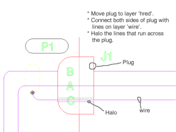
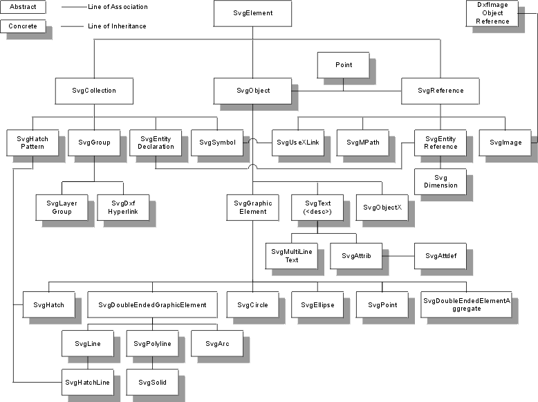

Dxf2Svg Overview
Version Information
Here is a list of software required to add to or make changes Dxf2Svg. This list is valid as of:
July 25, 2003
| Software |
Version |

|
Apache Ant version 1.5.3 compiled on April 16, 2003 |

|
1.4.1_01 Java(TM) 2 Runtime Environment, Standard Edition (build 1.4.1_01-b01)
Java HotSpot(TM) Client VM (build 1.4.1_01-b01, mixed mode) |
| AutoCAD |
2002i but this application will process any type of DXF. As
you go back in AutoCAD versions odd things can happen, particularly
with complex entities like hatches. This is due to changes in the
Dxf format over the years. This application was designed to work
with the 2000 dxf specification which remained unchanged through 2002. |

|
Adobe SVG Viewer 3.0 (build 76) |
|
|
Internet Explorer version 5.5 and up. |
Dxf2Svg Features
There is a plethora of switches you can in any combination you can use to customize
the result of the conversion.
To invoke Dxf2Svg on the command line, type this:
java -jar Dxf2Svg.jar <options>
or
java dxf2svg.Dxf2Svg <options> if the application jar is in your CLASSPATH.
Where <switches> include:
-
-h Displays help message.
-
-l Displays licensing message.
-
-f The name of the file or directory you wish to convert.
-
-xh Do not create HTML wrapper files for the SVG files.
-
-s Specify the target screen resolution of the viewing station.
-
-u Include URL information in CSS. Used for specifying font directories.
-
-dtd Include the DTD URL in output files.
-
-p Number of digits of precision required for numeric values. Default
is two with angle values defaulting to one decimal place.
-
-v Produce copious quantities of information about the conversion.
-
-z Compresses the svg file and changes the extension to svgz.
This switch will not confirm existing files. If any SVGZ files exist, they
all pre-existing SVGs or SVGZs will be over-written
silently
. The compression of the file is a two stage process. First the svg file is created,
then it is compressed to a new file. If the SVG file already exists you will get a message
asking if you would like the file to be over-written even if you ask for compressed output.
-
-DEBUG Even more information, mostly about Dxf2Svg's internal state.
Undefined elements are also output to the SVG in their correct location with a message
about what type of object they are and their unique ID (handle).
-
-r Process subdirectories recursively.
-
-js Include JavaScript. Here are some additional switches that control
placement of scripts in the SVG file.
-
foo/bar.js will include the foo/bar.js string as a path in the src
attribute of the <script> tag.
-
internal include empty <script> tags for user to fill in. Used for testing
scripts.
-
none do not include JavaScript (default action if -js switch
same as not using -js).
Special note should be made of the rich collection of animation JavaScripts that can be added
using SALly's animation language, all of which will over-ride any switch
setting that may have been set here.
-
-css Controls style sheet production. There are many sub switches associated
with this switch and are cumulative, as multiple options may be entered. All
options must be separated by commas including the last value.
Be careful, some CSS combinations create redundant CSS.
-
element as element attributes.
-
declared element attributes as entity declarations (default).
-
external make CSS in 'css/svg.css' if possible.
-
only make 'svg.css' in target graphic's directory and exit.
-
spar_c130 make internal CSS with spar c130 line weights and layer colours.
(The Sally API will over-ride any setting made with this switch.)
-
spar_only make a CSS with standard Spar pen weights bylayer and exit.
Note: All custom line weights are assumed to be in inches.
-
-c <integer> coerce all colours to the AutoCAD®
colour represented by integer. This will over-ride all colour settings so that
imbedded blocks with colours set to something other than BYLAYER will not need to be
redefined to display correctly.
Caveat: coercing causes all colours to be represented by the predefined colour integer with the exception of white.
Also note that -c
over-rides custom pen colours set in the config.d2s. Generally, it is better
to control colours with the penTable
Coerce will override any default colour, that is, any pen that has a custom colour is ignored
as a candidate for coersion in favour of the custom colour.
Example: The default pen
numbered 81 will have a colour 81. If you change that pen's colour using
SALly, then this pen will retain whatever colour you specified in the
pen table. If you don't specify a change of colour for pen 81, then the colour will be coerced
to the colour specified by
<integer>.
Hint: If you specify a pen in the pen table
with its original colour, the pen colour will not be coerced. This is handy if you are processing colour foldouts and you want the existing colours to continue to the finished file.
-
-line_cap Explicitly set line cap type. Valid line caps are:
b[utt], s[quare] or r[ound].
-
-line_join Explicitly set line join type. Valid line joins are:
m[iter], r[ound] or b[evel]. The DXF file will over-ride
-line_join if the DXF variable $JOINSTYLE has been set to a non-zero value.
-
-boardno_wrapper_names Names the HTML wrapper files after the illustration's
boardno names. This switch and the -xh are related. If the -xh
switch is used -boardno_wrapper_names will be ignored. If the file does not
contain board numbers, the wrapper file(s) will be named after the dxf file.
-
-db <database_path> switch will pre-search the conversion file list for
figure titles and numbers, sheet numbers, boardnos and NDIDs. All of this information is stored
in a database called "LibraryCatalog.ser" and output as XML
each time a conversion is run (see DTD for more information.
This database is also used when -boardno_wrapper_names is selected. When the
wrappers are generated the database is searched for "family members" (additional sheets)
and if any are found, links to those figures are added in the HTML. (There used to be a switch
called -group_families that did this explicitly, but this functionality is now
automatic if the library database can be found.)
-
-fuzz <double> The tolerance for Point location detection in
collaborate mode. The default tolerance is 0.05".
-
-IETM Using this switch will sets all the other switches that you need to
convert graphics for the Spar ITEM. The switches that are set are:
-
-f <current directory>
-
-c <7 (black)>
-
-z
(deleted).
-
-s <800x600>
-
-db <current directory>
-
-suppress_default_js
Tip: If these setting don't satisfy, -f, -s, -c and -db can
be reset to other values if they are entered on the command line after the -IETM switch.
-
-MY <attribute> <attribute_value> Use this to set an onclick event
for an <a> tag in a parts list figure. Looks like ...onclick="someFunc('012')"...
would be entered: -MY onclick someFunc. Note there are no parenthesis on the function
and
Note that parenthesis are now supported and expected. You may also include any number of arguments
you wish. One of the arguments could be the content of the
SvgText element which, in the case of a
parts list, will contain a single integer. This value will be added in the correct
argument order
by using the keyword
implied. The
SvgHyperLink class is responsible for creating
the appropriate links and within that class are methods for changing the order of any arguments
you wish to pass to the javascript. It uses another class
EventAttributeModifier
which actually handles the calculations that make this work. The upshot is that if you can
now write a function in the following
manner:
-MY onclick "someFunc(argument1, argument2, implied, argument4)". The implied
key word will take the
SvgText content and format it to the MY specification
(all numbers are padded to three characters with preceeding zeros).
When the -MY switch is used it used to require that all the part numbers
be hyperlinked text in the AutoCAD files, but now it automatically places all the index
numbers in anchor tags with the afore mentioned Attribute and Attribute value. Note:
you must quote the implied keyword. The values that replace implied
are verbatim and are NOT automatically quoted. If a part number already
has a hyperlink, that link is honoured and not modified by this -MY functionality.
the argument is calculated automatically from the content of the child text tag if it matches
a pattern for a part number (^[A-Z]?\\p{Digit}{1,3}[A-Z]?$ This catches
access panel identifiers as well).
-
-notes Informs the conversion process that some of the files may contain notes
that need to be imported into the SVG files. The output of this process
is a set of arrays of notes placed in the <SCRIPT> tags. The arrays are indexed by note
number (the zero array index value is null). It is up to the user to implement
the JavaScript that will use these arrays appropriately (see SALly documentation for
:javascript keyword or use an external file and use the -js switch). The trigger for any animation event could be a mouse over on
a note number. To make this work you will need to add an event to the text elements on the note
number layer. Use the :add keyword and
here
for more details.
Using '-notes' switch automatically turns on the -db
switch if it hasn't already been invoked, which in turn will check for an existing Database
before starting.
Note to users: If you are processing MY parts lists you need only supply the '-MY' and the
event attribute and its javascript function value which looks something like:
'-MY onclick showPart(implied)'
If you want notes to appear use '-notes' switch then use SALly and write
your what-to-do code in the :javascript section and finally use the
:add in the following manner:
:add "text" onlayer "NOTENUMS"{
"onmouseover" = "showNote(implied)";
}
The argument implied is used because we need to signal the javascript about which note we have
moused over. The actual notes are sorted out from the DXF files and are automatically included
if any one of the sheets of a figure has notes on it. The javascript must refer to the note
arrays by name and by default the name of the english note array is englishNote
and the array of French notes is frenchNote.
Here is a list of modifiers that can be used to control the names of the layers that notes appear on and the layer names where they can be moved to after note extraction:
-
-english_note_layer_name <layer_name> Informs the conversion process that any English notes can be found on a layer called <layer_name>. Searches for note patterns will take place on this layer only. The default layer name is 'engnotes'.
-
-french_note_layer_name <layer_name> Informs the conversion process that any French notes can be found on a layer called <layer_name>. Searches for note patterns will take place on this layer only. The default layer name is 'frenotes'.
-
-note_number_layer_name <layer_name> Like its sister switches this switch identifies the name of layer where the note numbers can be found, but unlike her sisters, this switch has no target note number destination layer switch since it is anticipated that the numbers require no translation, there is no need to switch them on and off. The default value for this switch is 'notenums'.
-
-default_target_note_layer_name <layer_name> This is the layer that any text goes to if the specified target layer cannot be found. The default is 't'.
-
-english_layer_name <layer_name> Changes the name of the layer where english text can be found from the default 'englsih'. After the conversion takes place, it may be useful to place the notes text that was found, onto another layer that can take advantage of language switching. Use this switch to identify that layer.
As an example consider notes that are put on layer 'englishnotes' and you wanted to include language switching. If the english layer is set to 'englishtext' you would use this switch and specify 'englishtext' as the argument to this switch.The default layer is 'english'. If the layer specified here cannot be found the default action is to use default_target_note_layer_name. That switches default value is 't'. The default value for this switch is 'english'.
-
-french_layer_name <layer_name> Denotes the French text layer name if it is not the default of 'french'. This switch performs the same function as the switch above it but for the French notes layer. The default layer is 'french'.
If you use all of the default values you do not need to use any of these switches. Using any of these switches if there are no notes has no effect.
-
-suppress_default_js This switch switches off the automatic inclusion of default language switching JavaScript functions. If the switch is not used, the boiler plate JavaScript functions
will be used. This allows the user to redefine this functionality for what-ever reason by using the :javaScript keyword in SALly config.d2s script. NOTE: Using this switch
also removes the onload=init() attribute from the <SVG> element - freeing
it up for other tasks if necessary. To date the only default javascripts are language switching
functions.
-
-include <file_name> This switch allows the user to embed an arbitrary text file into the SVG document. You may wish to do this to include a sub-SVG that has a menu in it, for example. Or you could also place your javascript into the file this way, or even comments. What ever is in the file defined by the include switch will be placed in all of the converted SVGs word-for-word. The switch is repeatable so you can include as many files in the target SVG as you wish. The files are included in the order that they appear on the command line or the config.d2s file.
-
-use_dxf_object_colour This value will allow objects to render in the colour
the illustrator intended. This can be done by setting the colour of a DXF object to something
other than BYLAYER. The default action is to render all objects to the colour of the layer
they belong to.
-
-update_db_only Does all the preprocessing to determine sheets and figures,
testing for graphic boardnos and proper titles but does not convert the files to svg.
-
-collaborate <layer_name> Searches this layer for all lines arcs
(basically all double ended graphic elements) and if they are connected (share an end point)
joins them together so they become polylines. You would want this so you could add animation
or event attributes to it as a single co-heasive group. See also Sally animation collaborate
command. They have identical functionality, but one can be used from the command line even
if there is no animation.
-
-swap_svg_link_for_html_link This method dynamically switches any link
that contain .svg(z) to .html. This allows users who entered
link targets as svg files to change their minds and point to the files wrapper html file.
The function will replace the first single instance of the pattern \\.(svgz|svg|SVGZ|SVG)
with .html, thus leaving any fragment reference untouched.
Incomplete multi-part switches throw an IncompleteSwitchSettingException at runtime.
With the exception of the -IETM switch mentioned above, you may enter the command
line switches in any order.
Additional Features
- Converts DXF hyperlinks.
- Hyperlinks can be placed on any DXF (read SVG) object(s).
- Creates and/or maintains an XML database using the
-db switch.
- Automatic linking of multi sheet illustrations.
- generates HTML wrapper for each file with multiple languages if desired.
- Auto-detects multi pule languages and automatically adds language switching buttons into
HTML wrappers.
- Auto-detection of discrete drawing elements into continuous objects (i.e. an arc, line, arc
can be tested and grouped into one continuous wire run).
- Searchable SVG content.
- Powerful DXF search engine.
- Automated complex conversion tasks with configuration files.
- Include custom JavaScript or ECMA script functions from configure files.
- Controllable layer draw ordering.
- Controllable pens (colour, line width).
- Controllable layer definitions (pen and fill colour).
- Addition of powerful animation functionality from the API.
- Controllable font mapping and scaling to 1/1,000,000 of a point accuracy.
- SVGZ un zipper to unzip svg files that have been converted with the
-z switch
- SVG zipper to re zip svg files if desired.
- A library catalog maintenance utility to manage and merge serialized databases produced
by Dxf2Svg during IETM conversion.
- Intelligent note extraction which allows notes to appear as popups (or whatever is desired)
on all sheets of a figure.
How to Run Dxf2Svg Without the Command Line
You can also invoke the application by double-clicking the Dxf2Svg.jar file. If there is no config.d2s
file in the current directory, an error message window will be displayed. Dismissing the window will
exit the application. However if a config.d2s file does exist, it is silently read and parsed
and the instructions within are executed.
It is permissible to use a configuration file of any
name as long as it ends with '.d2s'. The command line must be used and the name of
the file must be the only argument on the command line.
Dxf2Svg Application's Programmable Interface (API)
There is a small API language which provides a convenient method to perform conversion, called SALly.
SALly allows every aspect of conversion to be controlled from one file. The advantage of the
configure file is it is:
- Easy to set up.
- Provides a permanent record of all conversion specifications.
- The configure file can be reused repeatedly.
- Different conversions can be performed on the same data set.
- Diagnosis of conversion errors is simplified.
- Some functionality of Dxf2Svg is not available from the command line. The Pen table
is a good example; if you require specific line weights for certain pens, the only way to
do this is with SALly. Here is a more exhaustive list of additional functions that are
available through SALly:
- Controlling layer draw order (order layers).
- Animation, stand alone in <script> tags and inline functions on elements.
- Setup pen tables. Pen tables include the pen number, colour and line-weight.
- Layer styles. Controls the assignment of a specific pen and optional fill colour
for a specific layer.
- Font map. Map a font used by AutoCAD to another font (or the same font) and add
scaling to precisely fit a font's size representation in output SVG file.
See SALly Documentation for more details.
List of AutoCAD Entities Handled by Dxf2Svg:
- ARC
- CIRCLE
- DIMENSION
- ELLIPSE
- HATCH
- IMAGE
- INSERT
- LINE
- LWPOLYLINE
- (2D)POLYLINE
- POINT
- SOLID
- TEXT
- MTEXT
List of AutoCAD Entities Not Handled by Dxf2Svg:
- SPLINE - Replace with polyline or line and arc segments.
- BLOCK REFERENCE HATCH - Explode or replace with HATCH.
- 3DMESH
Files Associated With Dxf2Svg
There are a number of files that will help you convert DXF files.
-
config.d2s, *.d2s contains the instruction list
that is used to control the conversion process. It is based on a simple language
I wrote called SALly which stands for Svg Animation Language, the additional 'ly'
doesn't stand for anything, but is used as a memory aid. See here for
more details.
-
LibraryCatalog.ser - the conversion drawing database of titles, boardnos
figure numbers etc., as a set of Java serialized objects (Hashtables mostly).
-
boardno-control.xml - the XML version of the LibraryCatalog.ser which can
be written out at any time and specifically after each conversion that uses -db.
DXF Drawing Preparation for Conversion:
This section outlines some of the things the illustrator can do to improve
the conversion of DXF files from AutoCAD®.
Preparations for All Drawings
- Add notes (TBD).
- Purge drawings.
- Save the file as AutoCAD DXF 2000.
- Remove crop marks, PLOTBORDER and ASWINDOW.
- Make sure the illustration has boardno(s).
- Unlock all layers and move the entire drawing from the bottom left hand corner of the illustration
frame to coordinates 0,0.
- Set the drawing limits to the illustration's frame.
- Remove all drawing elements from outside the border except NDID
and titles which must remain.
- Replace SPLINE objects with ARCS and or POLYLINES.
Standard Illustration (Non-Wiring Diagram, Non-Schematic) Preparation
- Replace WIPEOUTs with ARLINES or HALOS.
- Do not explode blocks.
Wiring Diagrams Or Schematics Preparation
- Replace all blocks with the <svgBlockName>.dwg
from the location L:\andrew\blocks.
- Explode any blocks of components that are animated.
- Break wire connections at connection intersections.
- Place all wires on a new layer called WIRE. This will allow you to keep one script for
all conversions instead of a script for animation and a script for regular conversions.
- Ganged wires need to be separated. To do this a continuous polyline should be drawn from
the source to the destination and the old lines removed.
(Tip: if you use PLINE you can later FILLET all radii simultaneously).
- This is how to span objects so that wire runs can continue through a plug or over text.

More Guidelines for Conversion:
- Never use blocks or layers or anything that has names that start with a digit.
- Leave all titles NDID numbers and any other important information on the illustration.
Any text outside of the drawing limits frame will be included in output SVG inside
of <desc> tags. This information is used during the conversion and is important to
search engines, but will not be visible.
- Make sure all fonts used in all styles are TrueType® fonts.
- Change all object's colours to <BYLAYER> or you may see inexplicable colours appearing
in the conversion, or alternatively, use the
-c option to coerce colours to
the desired value.
- Don't use a spline as a hatch boundary. They will either be drawn very
crudely or throw an exception during conversion.
- Try to save the DXFs as DXF2000 where possible. Dxf2Svg will convert older DXF files
notably DXF R14, but converting R12 or earlier versions may produce unexpected results
because of the changes to the DXF specification over the years. Besides, the files produced
by earlier versions are typically larger, or their corresponding SVG files are larger.
- Dxf2Svg is generally, case insensitive. Layer0 and LAYER0 are the same.
This applies to Layer, Style or Line Type names. Where this does not apply is for
block names and their references, object IDs and image names. Do not rely on case sensitivity
to differentiate objects.
- Explode all drawing blocks or dimension blocks you want animated. Dxf2Svg is not required
to handle dimensions as part of its design specification.
- Turn on all layers you wish to see in the final conversion. Dxf2Svg will automatically
detect both French and English layers and adds JavaScripts that switch them on and off
at the user's request. If, however, you switch the french layer off and convert the file,
the information on the french layer will not become visible when you try and switch languages.
The end result will be the English layer will get switched off and the french will remain off.
- If you wish information not to appear in the drawing (like plotborder) switch the layer
off and freeze the layer. A layer that is just frozen will still be visible in the conversion.
- It is possible for a block to have two or more attribute tags with the same name.
This should be avoided to prevent name clashes in SVG name space. The consequences are that
any tag that has the same name as another tag, that is in the same block, and has a different
style will display with the style set by the first tag declared (this is pretty rare).
Information About Images
Images that can be inserted into DXF files will appear in the
SVG file. DXF files can handle an impressive set of graphic file formats as can
SVG but the two lists overlap with the following formats:
- JPG, JPEG - Joint Photographic (E)xpert's Group.
- PNG - Portable Network Graphic.
Here are some tips for getting your images into SVG.
When you save a DXF file
that contains an image, a reference to the files location is saved as an absolute
path. If the DXF file gets moved, the image has to be remapped to the DXF file,
but if you are converting the file you probably are going to move the file to
the display directory, so how do you refresh the image for the SVG?
Dxf2Svg will check to see if the DXF's reference is a valid file and if it
will get passed to the SVG file. If not, a search for the file is made in
an images directory below the current directory.
If such a directory is found, this path is added automatically to the reference
in the SVG file. If that fails then, during the conversion,
it is assumed that the image will be found in the current conversion directory.
This is the default behaviour.
Further if the file is found it will be encoded automatically and embedded intot the SVG graphic using Base64 encoding. See RFC2397 and RFC2045 (1996-11) for information on Base64 encoding.
If the graphic cannot be found, it is assumed that the graphic is not available at conversion time and so the URL reference to the graphic will be used instead.
Known Issues
Graphic file conversion ranges in complexity from the trivial to the
impossible. On that scale, the type of conversion Dxf2Svg performs is
mid-range. Both file formats are text based, both are vector formats,
but after that, the similarities end. Please keep this in mind as you
read over the bug list. Some of the bugs listed here cannot be fixed
because of the very nature of the conversion. Others are the limitation
of the viewer, and last but not least; some are just short comings of
the programmer. Short comings are the easiest to fix because it is
just a matter of education and coding. The plugin problems, which are
few, may or may not be fixed in the next release; that is up to AdobeTM.
A good example of the type of problem you face converting from DXF to
SVG is the fact that DXF uses double floating precision to represent
all coordinates and angles. The values are translated into strings,
and then written to file. Then Dxf2Svg comes along and reads the file
converts the value back into a Java double (AutoCAD uses C type serialization
while Java has its own platform independent format). The values are then
used in calculations and then converted back into strings for output as
XML.
This type of precision error can be reduced by using a binary type dxf file
format which Dxf2Svg reads quite happily (and more quickly). But this type
of DXF is, in my experience, less than 1% of the DXFs that will cross
your desk.
Problems With Scaling objects
Every object you draw in SVG has its own transformation 'space'. What that
means is that, when you perform any transformation on an object you are changing
the view of the object, not the object itself.
An Example:
Suppose you were drawing a box on the screen and you wanted the line weight
to be 0.05 inches thick, the height and width to be 1 inch and positioned
at a point 1 inch from the top of the drawing and 1 inch from the left side
of the drawing. When you scale that object (a transformation) the
object will appear to be twice as large, but there is something else that
is foreign to an Acad user's eyes: a byproduct of the scale is that the line
weight has doubled, and the object is no longer positioned at the location
it was originally drawn at.
This is because the object is not really twice as big; its size is still
1" x 1". What has happened is that the 'space' that object lies in
is temporarily made twice as big, and the scaling occurred from
the (0,0svg) origin point. The next object in the file is not
effected because the space is only distorted locally for that one object.
The exception to that statement is if the object is a group and then all
elements in the group will share the <g> transformation. It's just
a different way of doing things, but the complication is that the scaled
line weight on entity references (blocks) cannot be altered.
To get around this problem, if it is that big a deal, is to explode the block
in AutoCAD before conversion.
Problems With Text
- Multi line text may not wrap identically to AutoCAD. This is due to
the discrepancies of fonts used by AutoCAD verses fonts available to the
viewer at the time of display (perhaps on a different computer) and
floating point double drift of calculations.
- Because of the differences between SVG and DXF handling of TrueType
Fonts MTEXT elements that do not have an insertion point of upper left, may
not render in exactly the right spot.
Problems With Hatches
- Dashed line types that appear in hatches (and paths in general), may
not appear to render correctly because of a bug in Adobe's
SVG viewer (version 3.0 and below). The viewer draws a very thin,
but visible line over the entire extents of the line or path.
Other shapes do not exhibit this behaviour.
- The SvgEllipse
renderAsHatchBoundary() produces
inaccurate results for an unknown reason. This effects only hatch objects
made up of, or containing elliptical arcs as hatch edge boundaries.
- SvgSpline does not work yet owing to it's low priority, the
complexity of the math involved to get it working and because of the limitations of
the algorithm that converts a spline into Bézier curves. Next release.
In the mean time a spline boundary edge will cause
UndefinedHatchEdgeException .
- Line type patterns in both lines and hatches may not match AutoCAD's
Line Types exactly because of floating point double 'drift'.
Problems With Sally
When using the javaScript keyword, SALly will tokenize whole strings
as tokens. If you have a line that contains lone symbol like brace ("}";),
the tokenizer will pass the token "}" to the parser which will analyse it as a
string. The contents of the string will match the brace key symbol, and a syntax exception will
be thrown. To over come this problem place a whitespace char before or after the brace.
Please feel free to submit bugs to
me as you come across them.
SVG Object Tree
Here is are the SVG graphic objects and how they relate to one another through OOP inheritance.

The DTD is presented here as reference, but is subject to change. The most up to date version
can be found in the Java class LibraryCatalog documentation.
<!DOCTYPE graphiclist [
<!ELEMENT graphiclist (book+) >
<!ELEMENT book (figure+) >
<!ATTLIST book
ndid CDATA #REQUIRED >
<!ELEMENT figure (sheet+, title*) >
<!ATTLIST figure
figNo CDATA #REQUIRED
totalSheets NMTOKEN #REQUIRED >
<!ELEMENT sheet (#PCDATA) >
<!ATTLIST sheet
sheetNo NMTOKEN #REQUIRED
engBoardno CDATA #IMPLIED
freBoardno CDATA #IMPLIED
bilBoardno CDATA #IMPLIED >
<!ELEMENT title (#PCDATA) >
<!ATTLIST title
language CDATA #IMPLIED >
]>